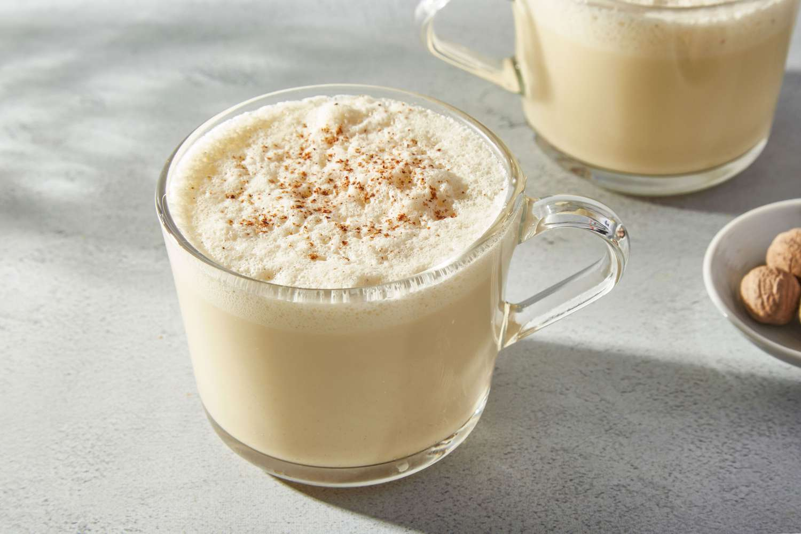

Home
Eggnog (no alcohol)

Description
A refreshing egg- and milk-based beverage. Although traditionally served during Christmas, it works well for any time of the year!
Ingredients
- 4 eggs
- 1 heaping tbsp of honey
- 300ml whole milk
- 200ml cooking cream
- Dash of cinnamon
- A few drops of vanilla extract
Steps
- Separate the egg yolks and whites. Place the whites in a large bowl and the yolks in a smaller one.
- Add the milk and cream to a third bowl and place it over medium-low heat. Make sure to stop the heat just before the mixture starts boiling.
- Add the vanilla and cinnamon to the hot liquid.
- Add the honey to the egg whites and beat the mixture until firm (using a mixer is recommended).
- Quickly add the eggs to the hot liquid mixture after taking it off the heat and mix everything together.